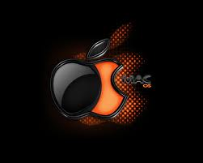

| Il sistema operativo del Macintosh originariamente non aveva un nome particolare, essendo parte integrante del prodotto. La versione 7 fu commercializzata semplicemente come "System 7", e con questo nome era conosciuta dagli utenti. Apple successivamente intraprese per un breve periodo la strategia di concedere il sistema operativo ad altri produttori di computer perché potessero realizzare cloni del Mac, e venne introdotto il nome "Mac OS" per distinguere il sistema operativo dai computer Macintosh prodotti da Apple.
La fama del Macintosh è dovuta in gran parte alla sua interfaccia utente grafica (GUI). Quando fu introdotto il Macintosh, nel 1984, esistevano altri sistemi con GUI, in particolare i computer Alto e Star realizzati nei laboratori PARC della Xerox, che lo stesso team di sviluppo del Mac visitò mentre lavorava al proprio progetto. La stessa Apple aveva già realizzato un computer con interfaccia grafica, il Lisa. Tuttavia, Macintosh fu il primo di questi computer ad avere un grande successo commerciale, e diede inizio alla diffusione di massa dell'interfaccia grafica.
Apple impiegò grandi risorse nello studio di un'interfaccia grafica semplice e intuitiva da usare, e il Mac fu il modello a cui aspirarono numerosi altri progetti di GUI.
Altre caratteristiche peculiari del primo Macintosh (per l'epoca) furono l'utilizzo standard di un mouse e di un lettore per dischetti da tre pollici e mezzo. Il primo Mac era dotato di soli 128 KB di RAM, e la maggior parte del sistema operativo era contenuta in ROM. Gran parte del sistema operativo fu sviluppato in Assembly e il resto in Pascal. Le interfacce di programmazione, pubblicate nella collana Inside Macintosh, furono inizialmente specificate in questi due linguaggi. Il team di sviluppo originario del sistema operativo Macintosh comprendeva, fra gli altri, Jef Raskin e Bill Atkinson.
Il sistema funzionava sui processori CISC Motorola della serie 68000, utilizzati nei Macintosh per molti anni. Nel 1994 vennero lanciati i Power Macintosh basati sui processori RISC PowerPC, sviluppata da un consorzio comprendente Apple, IBM e Motorola, ed il sistema operativo venne gradualmente convertito in codice PowerPC. Questa operazione richiese molto tempo, per via della grande quantità di assembler 68k usato nel codice originale del Mac OS: per permettere un rapido passaggio ai processori RISC, venne sviluppato un nanokernel PowerPC su cui girava il Mac OS tradizionale, che sui primi PowerMac era costituito quasi interamente da codice 68k emulato grazie al Mixed Mode Manager, lo stesso meccanismo che permetteva l'esecuzione trasparente di tutti i vecchi programmi per Mac sui Power Macintosh. La quantità di codice nativo PowerPC nel Mac OS aumentò gradualmente nelle versioni successive, e con essa le prestazioni del sistema.
Mentre il Mac OS classico veniva gradualmente ottimizzato per la nuova architettura PowerPC, Apple aveva in mente di sostituirlo con un sistema operativo completamente nuovo; il vecchio Mac OS, infatti, soffriva ancora di molte limitazioni imposte dalle scarse risorse del Macintosh originale, come la mancanza del multitasking preemptivo e della memoria protetta. Dopo una serie di joint-venture (Pink, Taligent), Apple puntò sullo sviluppo di Copland, un nuovo sistema operativo basato sul nuKernel e che avrebbe dovuto offrire multitasking preemptivo e memoria protetta pur mantenendo la piena compatibilità con il software preesistente. Copland sarebbe dovuto diventare Mac OS 8, ma la cattiva gestione del progetto (in particolare il requisito della piena retrocompatibilità) portarono a grandi ritardi sulla tabella di marcia e, infine, all'abbandono del nuovo sistema. Mac OS 8 e Mac OS 9 vennero rilasciati, ma continuarono ad essere basati sulla tecnologia del System 7 (Blue).
Dopo il fallimento di Copland, Apple si rese conto che l'unico modo di avere un sistema operativo aggiornato in tempi brevi era adottarne un altro già esistente. Furono vagliate diverse possibilità, fra cui il BeOS, ma alla fine la scelta cadde su OpenStep di NeXT. NeXT era stata fondata dallo stesso Steve Jobs, che in precedenza aveva fondato Apple insieme a Steve Wozniak; con l'aquisizione di NeXT, Jobs tornò alla guida di Apple, e venne intrapreso lo sviluppo di un sistema che unisse la base UNIX di OpenStep (Microkernel Mach) con l'interfaccia grafica e le molte tecnologie ad alto livello del Mac OS. Il risultato di questa unione è stato Mac OS X, che nel giro di pochi anni ha completamente rimpiazzato il Mac OS 9, ribattezzato nel frattempo Classic. Per garantire la compatibilità con le vecchie applicazioni, rimase la possibilità di caricare, all'occorrenza, Classic all'interno di un apposito task di Mac OS X.
Il Mac OS versione 10, denominato Mac OS X, non è una semplice evoluzione del Mac OS Classic, ma è stato completamente riscritto e costituisce, di fatto, un sistema operativo diverso. Mantiene tuttavia una notevole retrocompatibilità con le vecchie applicazioni grazie alla possibilità di caricare, all'occorrenza, il Mac OS Classic all'interno di un apposito task.
Mac OS X è basato su Microkernel Mach + BSD (in particolare su BSD e con microkernel Mach). Successivamente Apple ha reso liberamente disponibile parte del codice sorgente del sistema con una licenza Opensource. Ne esiste una versione ottimizzata per l'uso sui servers, ossia Mac OS X Server.
A fine giugno 2005 giunse la notizia dell'adozione di CPU Intel per le macchine Apple, appositamente modificati per far funzionare il Mac OS X, uno storico cambiamento. Con questa strategia (da taluni inizialmente contestata, da altri applaudita), Apple ha inteso colmare il gap prestazionale presente nel campo dei portatili (visto che IBM non aveva ancora presentato una versione soddisfacente del processore G5 per questi computer) ma anche conquistare nuovi settori di mercato alla concorrenza. Forte della nuova architettura, Apple ha quindi dato la possibilità di eseguire in dual boot anche i sistemi Windows XP o Vista sui nuovi Mac basati su Intel, grazie allo sviluppo di Boot Camp, una piccola applicazione la cui versione definitiva è stata inclusa nel Mac OS X 10.5.
|